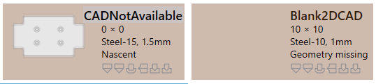
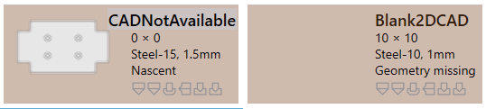
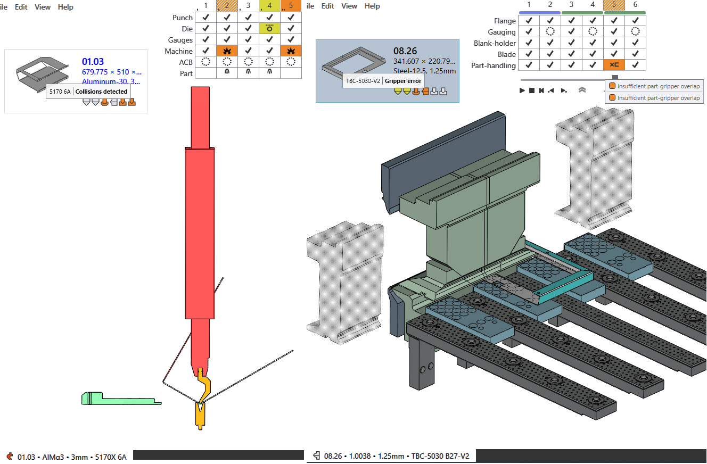
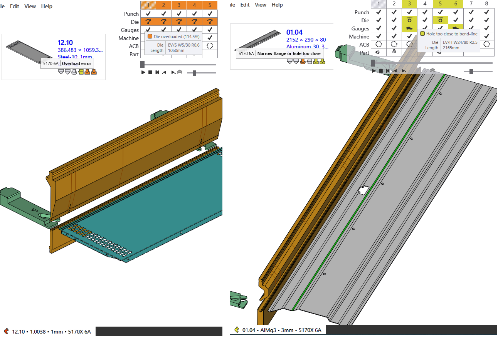

零件验证
CAD错误
不可行（折弯和切割）
-
如果在自动加工过程中找到没有有效的折弯解决方案，则JFY Plus将折弯不可行状态分配给零件。
-
如果折弯解决方案[08.07]有警告，将被忽略并自动考虑用于切割解决方案。
-
如果没有找到可行的切割解决方案，则将零件置于切割不可行状态。
 === 材料错误
- 缺少材料：最初从分配的模型和材料读取的厚度，根据 JFY Plus 材料进行检查。如果不存在，则触发分配的材料缺失错误。
- _Material not assigned：模型没有针对材料的映射字段，则分配有未分配的材料。
=== 材料错误
- 缺少材料：最初从分配的模型和材料读取的厚度，根据 JFY Plus 材料进行检查。如果不存在，则触发分配的材料缺失错误。
- _Material not assigned：模型没有针对材料的映射字段，则分配有未分配的材料。
 === 几何形状错误
- Open contours detected：CAD具有开放实体。
- Multiple outer contours detected： CAD有多个闭环。
=== 几何形状错误
- Open contours detected：CAD具有开放实体。
- Multiple outer contours detected： CAD有多个闭环。
 - 新生：从电子表格csv或xlsx加载零件，缺少的CAD文件创建为新生零件错误。
- Geometry missing：CAD没有有效的几何形状或不可用。

== CAM错误
=== 折弯加工错误
- 新生：从电子表格csv或xlsx加载零件，缺少的CAD文件创建为新生零件错误。
- Geometry missing：CAD没有有效的几何形状或不可用。

== CAM错误
=== 折弯加工错误
以下是折弯加工错误。
-
Collisions detected 和 Gripper error。
 - 模具 Overload error和孔在折弯线附近。
 - Needs review 和下模/上模跨度短。
 - Tool missing、Poor backguage、零件对于机床来说太大了。
- Tool missing、Poor backguage、零件对于机床来说太大了。

以下是切割加工错误。
-
缺少的切割条件未根据材料映射。
 - 冲切废屑错误：对于冲裁加工，内圈加工时没有任何接头。
- Untooled or partially tooled contours：缺少冲裁模具段。
- 冲切废屑错误：对于冲裁加工，内圈加工时没有任何接头。
- Untooled or partially tooled contours：缺少冲裁模具段。